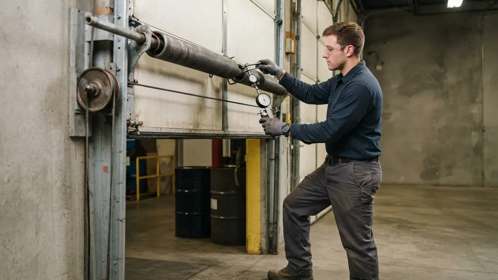
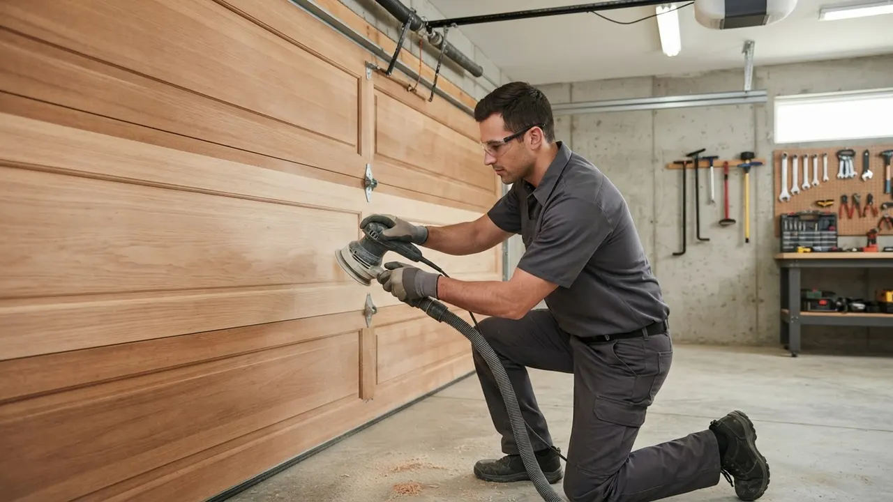
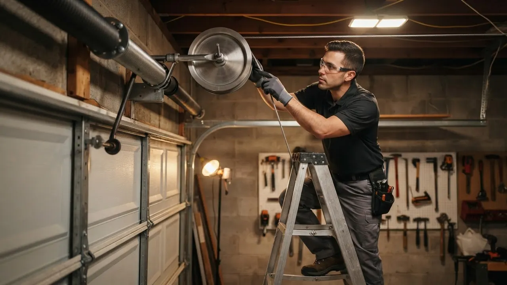

Garage Door Remote Programming & Repair
Garage Door Remote Programming Wilmington DE done same day
Garage Door Remote Programming Wilmington DE covers everything from pairing a new clicker to rebuilding an opener that stopped answering. We work on LiftMaster, Chamberlain, Genie, Craftsman, Linear and Marantec systems across New Castle County, and we carry the remotes and keypads on the truck. If your remote quit at the worst moment, call (302) 556-5080 and we will get you back through the door today.
Service overview
Garage Door Remote Programming Wilmington DE explained
Garage Door Remote Programming Wilmington DE is the work of matching a handheld transmitter, keypad or car remote to the receiver board inside your opener so the door answers only your signal. That means clearing old codes, setting a new rolling code or DIP switch pattern, testing range from the driveway, and confirming the safety eyes still reverse the door. On older Wilmington openers we also check the logic board, the antenna wire and the battery contacts before we blame the remote.
Most calls we run in Wilmington start the same way: a remote that worked last night and does nothing this morning. Sometimes it is a dead battery or a remote that got wet in a coat pocket. Other times the opener lost its memory after a power bump, or a neighbor's new opener is stepping on your frequency. If you searched for garage door remote programming Wilmington DE near me after a failed DIY attempt, we can usually undo the mess and pair every remote in the house in one visit.

Practical benefits
Why homeowners call us for remote work
Remote problems look small until you are locked out of your own garage in the rain. Here is what you actually get when we handle the job.
Every remote paired
We do not just fix the one clicker that died. We pair every handheld, visor remote and wireless keypad in the house to the same opener, then label them so you know which is which. A typical three-remote job takes about 25 minutes and leaves no stragglers that only work from six feet away.
Rolling code done right
Modern LiftMaster and Chamberlain openers use rolling codes that change with every press. If the pairing sequence is rushed, the remote works twice and quits. We follow the manufacturer sequence step by step and test the door 10 times in a row before we call it finished.
Range tested from the street
A remote that only works inside the garage is useless. We test from the end of your driveway and from the alley behind the house, then adjust the antenna wire or replace a weak receiver if the signal drops. Most Wilmington homes get a clean 100 feet after we are done.
Old openers kept alive
Plenty of Wilmington garages still run 1990s Craftsman and Genie units with DIP switches. Those remotes are getting scarce, but we keep compatible replacements on the truck and can program them on site instead of pushing you into a full opener replacement you do not need yet.
How service works
How our remote service call runs
No mystery, no waiting around. Here is the sequence from your first call to a working remote in your hand.
STEP 01
Phone triage
You call (302) 556-5080 and tell us the brand on the opener and what the remote is doing. We ask whether the wall button still works, because that one answer tells us whether the problem is the remote or the opener itself. Most calls get a same-day window, usually within two to four hours.
Tools and methods
Tools and methods we use
Screwdriver set and rubber mallet
Used to open remote cases, swap batteries, and reseat opener covers without cracking the plastic housing on older LiftMaster and Genie units.
Multimeter
Tests the opener's power supply and receiver board voltage so we can tell a dead remote from a dead receiver before we sell you anything.
Step ladder and safety glasses
Required for reaching the opener head safely. We wear safety glasses any time we are working near torsion springs or the opener's moving chain.
Manufacturer programming guides
Every brand has a different learn sequence. We keep current guides for LiftMaster, Chamberlain, Genie, Craftsman, Linear, Marantec and Sommer on the truck.
Remote and receiver stock
We carry common remotes, keypads and receiver boards so most jobs finish on the first visit instead of waiting on a parts order.
Tape measure and level
Used when a remote problem turns out to be a door alignment issue. A door that is out of level will not respond cleanly to any remote.
UL 325 safety verification
Every remote visit ends with a safety reverse test. We place a 2x4 under the door and confirm it reverses within two seconds. That is the UL 325 standard for residential openers, and we do not skip it.
DASMA-aligned opener checks
We follow DASMA guidance on residential operator setup, including force limits and travel adjustment. A properly set opener responds to the remote every time and does not strain the door.
Rolling code re-pairing
For post-1997 openers, we clear the receiver's memory and re-pair each remote one at a time. That prevents ghost remotes from a previous owner still opening your door.
Range and interference testing
We test the remote from the street and the alley, then check for interference from LED bulbs, Wi-Fi routers and neighboring openers. If range is still weak, we adjust the antenna or replace the receiver.

Where this service fits
When to call us for remote work
You just moved into a Wilmington home and the previous owner's remotes are gone or unlabeled.
We clear the old codes from the opener, pair new remotes and a keypad, and label everything. We also check the safety reverse and the door balance so you know the whole system is sound. You drive away with working remotes in both cars and a keypad code you chose yourself, usually inside one visit.
A remote got wet, cracked, or run over and you need a replacement today.
We carry LiftMaster, Chamberlain, Genie, Craftsman, Linear and Marantec remotes on the truck. The tech matches the frequency, programs the new remote, and confirms range from the driveway. A working remote in your hand the same day, typically for $85 to $150 including programming.
You added a third car, a teenage driver, or a rental tenant and need another remote paired.
We pair the new remote to your existing opener, clear any old devices that are no longer in use, and test the door. If you want a keypad instead, we set that up too. Every driver in the household has their own remote, and no old clickers are still floating around that can open your door.
Your opener is old and you are worried a new remote will not work with it.
We check the opener's model and frequency, then match a compatible remote from the truck. If the receiver is too old for any modern remote, we quote a receiver or opener replacement with the price up front. You either get a working remote for under $150 or a clear, honest quote for the replacement you actually need.
Local execution
How remote work runs in Wilmington
Wilmington garages take a beating. Summer humidity rusts the opener's chain and corrodes remote battery contacts. Winter freeze-thaw cycles work the door out of balance, and the opener strains harder, which can fry the logic board that talks to your remote. Older homes in The Highlands and Wawaset Park often still run 1990s openers with DIP switches, while newer builds along the Riverfront use rolling-code LiftMaster and Chamberlain units. We carry parts for both. If you need garage door remote repair in Wilmington, Delaware, we can usually reach you within two to four hours, and we work in New Castle County seven days a week. Most remote calls finish in a single visit because we stock the remotes and receivers on the truck.
Trolley Square
Many homes here have detached garages with older openers. We see a lot of Genie and Craftsman units that need DIP switch remotes we keep on the truck.
The Highlands
Larger homes with multi-car garages often have three or four remotes to pair. We label each one so families know which remote belongs to which car.
Riverfront
Newer construction with rolling-code LiftMaster and Chamberlain openers. Most calls here are re-pairing after a power bump or adding a keypad for a shared entrance.
Union Park Gardens
Historic homes with tight garages and original track layouts. A door that binds will make the remote look broken, so we check door balance on every visit.
Southbridge
Mixed housing stock with a lot of 1990s openers. We keep compatible remotes and receiver boards on hand so we can finish most jobs the same day.
Summer humidity and salt air near the river
Corrodes remote battery contacts and opener terminals. We clean the contacts and apply a light dielectric grease to slow the corrosion down.
Winter freeze-thaw cycles
Works the door out of balance and strains the opener. We check the door's balance on every remote call and adjust the opener's force limits if needed.
Power outages from storms
Wipes the opener's memory and un-pairs every remote. We clear the old codes and re-pair each remote, then test the door 10 times to confirm the fix holds.
Older homes with 1990s openers
DIP switch remotes are getting scarce. We keep compatible replacements on the truck so you do not have to replace a working opener just to get a new remote.
Problems we solve
Remote problems we fix in Wilmington
Most remote calls fall into a handful of patterns. Here are the ones we see most often, and what happens if you leave them alone.
Remote stopped working after a power outage
We clear the opener's memory, re-pair every remote and keypad, and test the door 10 times. If the logic board took damage from the surge, we diagnose that too and quote the repair before we start. The opener's memory can wipe during a surge, leaving every remote unpaired. You end up parking outside and using the wall button until someone fixes it.
Remote works only from a few feet away
We replace the battery, check the antenna wire on the opener, and test range from the street. If a neighbor's new opener is stepping on your frequency, we can change the code channel or replace the receiver. Weak range usually means a dying battery, a damaged antenna wire, or interference from a nearby device. It gets worse over time and leaves you stuck in the rain.
New remote will not pair with the opener
We match the remote to your opener's frequency and brand, clear old paired devices if the receiver is full, and program it on site. If the opener is too old for a modern remote, we tell you and offer a compatible replacement. Wrong frequency, wrong brand, or a receiver that is already full. A remote that will not pair is money wasted if you bought the wrong one online.
Keypad and remotes both stopped working
We test the receiver, check the opener's power and logic board, and repair or replace what failed. Once the receiver is healthy, we re-pair every remote and keypad in the house. When everything stops at once, the problem is usually the receiver board or the opener's power supply, not the remotes. That is a bigger job than a battery swap.


A practical standard for every visit.
Clear planningPrepared arrivalsCareful workLocal follow-through
Experience in the details
Remote work is our daily routine
Delaware Express Garage Door Service has been working on Wilmington openers since 2010, which puts us at 16 years in the trade. Our techs carry LiftMaster, Chamberlain, Genie, Craftsman, Linear, Marantec and Sommer remotes on the truck, plus the receivers and logic boards that pair with them. We follow UL 325 safety requirements on every job and keep our work aligned with DASMA guidance on residential operators. That combination means we can program a 2026 rolling-code opener and a 1994 DIP switch unit on the same afternoon without guessing.

Where we work
One local team. A lot of ground covered.
Downtown WilmingtonRiverfrontThe HighlandsTrolley SquareForty AcresBaynard VillageWawaset ParkCool SpringTrinity VicinityBrowntownLittle ItalyUnion Park Gardens
Check my address Notes from local customers
What Wilmington neighbors say
My LiftMaster remote quit after a storm knocked the power out. I tried the learn button twice and gave up. Delaware Express came out the same afternoon, cleared the old codes, and paired three remotes plus the keypad in about 20 minutes. He also showed me how to do it myself next time. Fair price, no upsell.
The remote on my 1998 Craftsman opener stopped working and I figured I would have to replace the whole unit. The tech had a compatible DIP switch remote on the truck, matched the switches, and had me running again for under $120. He checked the safety reverse and the rollers too. Honest guy.
We manage six units with Genie openers and the remotes were constantly dropping out. Delaware Express came out, reprogrammed every remote, replaced two weak receivers, and set up a keypad for the shared entrance. Two months later, zero callbacks from tenants. That is the number I care about.
Press the learn button on the opener, then hold the remote button for two seconds until the opener clicks or the light blinks. That is the short version for most LiftMaster and Chamberlain units built after 1997. Older Genie and Craftsman openers use DIP switches instead, and the switch pattern on the remote has to match the opener exactly. If two tries do not take, call us at (302) 556-5080 and we will pair it on site.
Typical 2026 pricing in Wilmington runs $65 to $95 for programming only, and $85 to $150 when a new remote is included. A receiver board repair or replacement pushes the job into the $150 to $280 range. Multi-car garages with three or four remotes to pair usually land at the lower end because the setup work is already done. We quote the number before we start.
The three most common causes are a dead battery, a remote that lost its pairing after a power outage, and a receiver that stopped accepting the signal. Check the wall button first. If the door opens from the wall but not the remote, the opener is fine and the problem is in the remote or the receiver. We diagnose all three in one visit.
We do. Delaware Express Garage Door Service has been programming and repairing remotes in Wilmington since 2010, and we cover every neighborhood from Trolley Square to Southbridge. We carry remotes for LiftMaster, Chamberlain, Genie, Craftsman, Linear and Marantec on the truck, so most jobs finish in a single visit. Call (302) 556-5080 to book a same-day window.
Keep exploring
Related Services
Your next step is waiting
Need Garage Door Remote Programming Wilmington DE today?
We are licensed, insured and have been working Wilmington openers since 2010. Same-day windows, flat pricing, and remotes for every major brand on the truck. Call (302) 556-5080 and we will get your clicker working before the day is out.
Start with the basics
Call For Garage Door Service
Call (302) 556-5080 and tell us what your door is doing. We answer during business hours and run emergency calls after hours. Most days we can get a tech to you the same day, and we will give you a window, not a maybe.